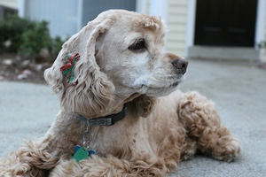
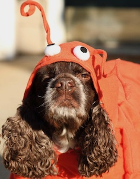
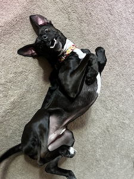
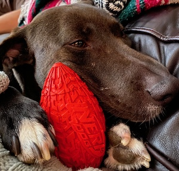
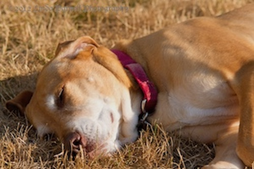

Bailey - Adopted from a backyard breeder.
Diva pup with Christmas bows waiting for her admirers to come and adore her.
She loves people, so long as they cater to her every whim. Although she came
from a backyard breeder, she worries about all the animals in shelters. She
would appreciate if if you click her picture to see adoptable pets from her
hometown of Tampa, FL.

Wallace - Adopted from a pet store
Wallace is a little quirky and loves his costumes - sometimes.
Just be sure you don't lose his favorite ball or he will pester you until it is found.
Wallace may have come from a pet store, but he advocates strongly for adoption.
Please click his picture to see adoptable animals from his hometown of Fort Lauderdale, FL.

Max - Adopted from Paws Across Pittsburgh
Max appears to be part vampire bat - just look at those ears and fangs!
He may look a little scary sometimes, but is really just a big, cuddle-bug.
It may not be a bad idea to have some garlic and holy water nearby, though - just in case.
Max would love for you to click his picture to see more adoptable animals from his shelter!

Doc - Adopted from Butler County Humane Society
Don't let that sweet face fool you!
Doc can melt your heart, but make sure you have a large supply of toys.
You see, Doc can destroy a stuffie or squeaky toy in minutes and will then
turn his attention on your furniture. More animals at Butler County Humane Society
can be seen by clicking his photo

Basil - Adopted from Arizona Animal Welfare League
Basil was born in AZ and loves the sun. He doesn't care if it's over 100 degrees,
and he's just as happy sleeping on rocks as he is sleeping on grass. Just be
aware - he has no shame and may give you a NSFW pose!
Click the photo to check out available animals at Arizona Animal League.